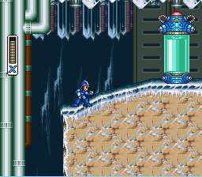
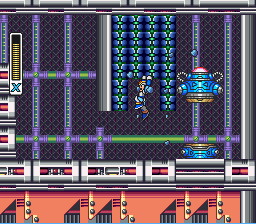
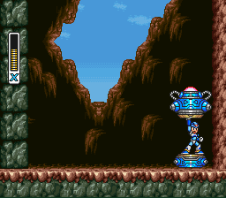
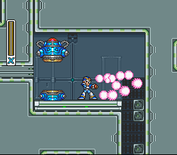
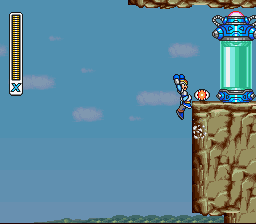

O que são os Upgrades de Armadura?
Durante sua jornada, X pode encontrar cápsulas deixadas pelo Dr. Light.
Cada cápsula oferece uma parte da armadura, que concede habilidades especiais — como:
- Botas que permitem dash
- Capacetes que quebram blocos
- Peitorais que reduzem o dano recebido
- Canhões que melhoram o poder de ataque
Coletar os quatro upgrades transforma totalmente a jogabilidade e fortalece X para os desafios mais difíceis.

Chill Penguin
No meio da fase, após duas rampas e uma subida, entre na cápsula e você terá adquirido o Dash.

Storm Eagle
Localizado lá no final da fase, suba na parede que tem um buraco em cima, você verá alguns tangues de combustível, atire neles até explodirem, terá uma sala com a cápsula. Você terá adquirido a habilidade de quebrar blocos com a cabeça.

Sting Chameleon
No começo da fase, na parte em cima da caverna, lá vai ter um mini chefe, mate ele e a cápsula vai aparecer do chão. Você tomara a metade do dano que recebia antes.

Storm Eagle
No meio da fase, no teto terá alguns blocos que você pode quebrar com o upgrade do capacete, em baixo vai ter uma plataforma alta, fique no final da plataforma e pule com o dash para alcançar os blocos e os quebrá-los para subir, mas cuidado se você cair tento quebrado algun bloco não consiquirá alcançalos de novo. Com o upgrade do Buster você poderá dar um tiro mais forte e carregar os tiros dos chefes.

Armored Armadillo
Atenção, você só poderá pegar esse upgrade se tiver com a vida cheia.
No final da fase, no último carrinho minerador, carregue o tiro do Sting Chameleon para ficar invencível,
quando o carrinho tiver quase caindo pule com o dash para bater na parede e subir ela.
Se a cápsula não estiver lá não se preocupe, você vai gastar algumas vidas até a cápsula aparecer. E então fazendo o
mesmo movimento do Street Fighter, meia lua e tiro no caso, você vai atirar um HADOUKEN! que mata qualquer inimigo
ou chefe, mas só se você estiver com a vida cheia.